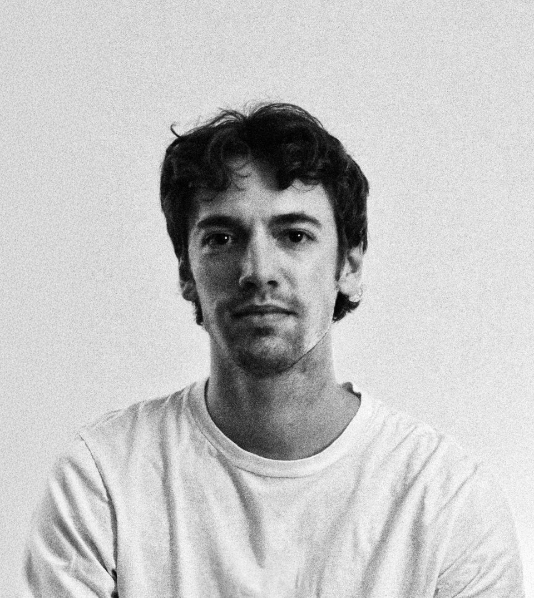
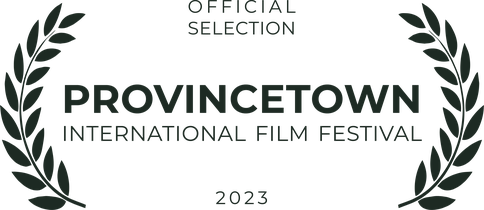
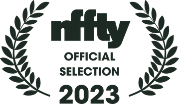
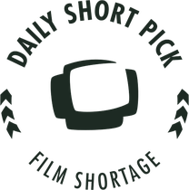

Noah Matalon is a director from New England, now living in Los Angeles. He writes and directs short films, documentaries and music videos.
Alongside his own work, he has been a cinematographer, producer and production manager on several projects. For the past three years he has managed post-production for a documentary company in Los Angeles.
His short documentary Projectionist was selected for the Rhode Island International Film Festival in 2022, and in 2023 he received Emerson College's top filmmaking prize. He is now in post-production on his newest short, Tartarus.
He is only four awards away from EGOT status.
Emerson College Cinematic Achievement Award, 2023


